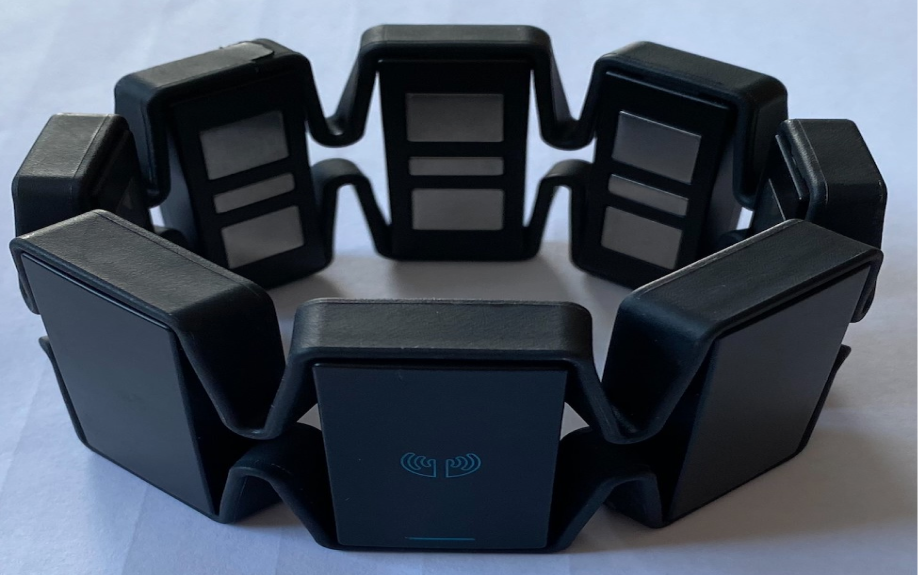
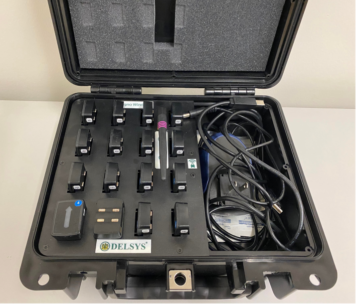
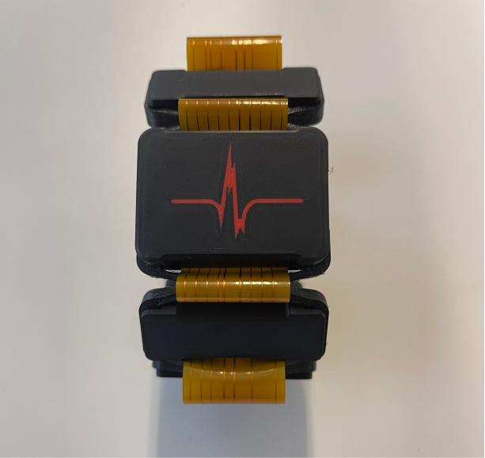
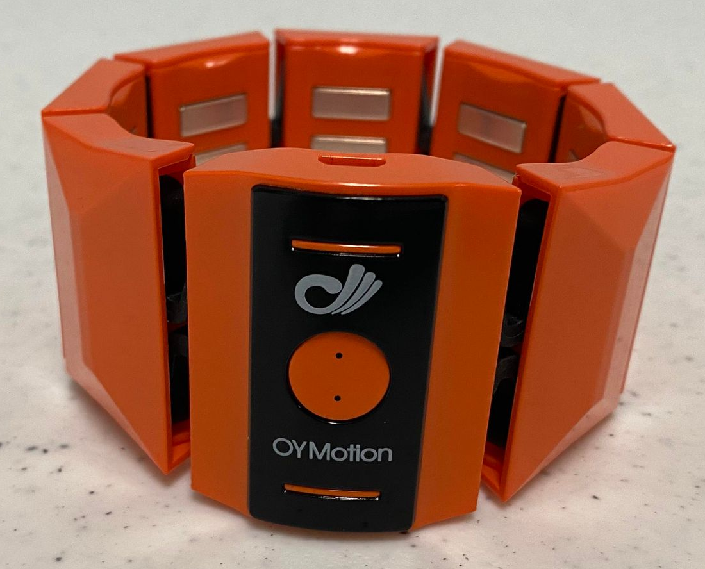

By default, LibEMG supports several hardware devices (shown in Table 1).
The Myo Armband is a previously available commercial device popular for HCI applications due to its low cost.
The Delsys is a commercially available system primarily used for medical applications due to its relatively high cost.
The SIFI Cuff is a pre-released device that will soon be commercially available. Compared to the Myo armband, this device has a much higher sampling rate (~2000 Hz).
The Oymotion Cuff is a commercial device that samples EMG at 1000 Hz (8 bits) or 500 Hz (12 bits).
If selecting EMG hardware for real-time use, wireless armbands that sample above 500 Hz are preferred. Additionally, future iterations of LibEMG will include Inertial Measurement Unit (IMU) support. As such, devices should have IMUs to enable more interaction opportunities.
Myo Armband |
|
 |
Delsys |
|
 |
SIFI Cuff |
|
 |
Oymotion |
|
 |
Table 1: The list of all implemented streamers.
Inspecting Hardware
LibEMG includes an analyze_hardware function to run an analysis on the hardware device being used. This is a good way to check that your device is working as expected. Example output from this function for the Myo Armband is:
from libemg.streamers import myo_streamer
from libemg.data_handler import OnlineDataHandler
if __name__ == "__main__":
streamer, sm = myo_streamer()
odh = OnlineDataHandler(sm)
odh.analyze_hardware()
Starting analysis (10s)... We suggest that you elicit varying contractions and intensities to get an accurate analysis.
Sampling Rate: 200
Num Channels: 8
Max Value: 127
Min Value: -128
Resolution: 8 bits
Repeating Values: 0
sampling rateis the number of samples read per second.num channelsis the number of channels being read.min and max valuesare the maximum values read from the data.resolutionis the predicted resolution in bits based on the data seen.repeating valuesis the number of repeated values in the input data. Repeating values that are > 0 indicate that there might be some issues (e.g., the hardware sensor is malfunctioning).
Creating Custom Streamers
Custom UDP streamers can be created to interface with other hardware. A UDP streamer reads a value from a device, pickles it, and sends it over UDP. An example streamer for the Myo Armband is shown in the code snippet below.
Example Code
import socket
import multiprocessing
import pickle
from pyomyo import Myo, emg_mode
def streamer():
sock = socket.socket(socket.AF_INET, socket.SOCK_DGRAM)
m = Myo(mode=emg_mode.FILTERED)
m.connect()
# On every new sample it, simply pickle it and write it over UDP
def write_to_socket(emg, movement):
data_arr = pickle.dumps(list(emg))
sock.sendto(data_arr, ('127.0.0.1' 12345))
m.add_emg_handler(write_to_socket)
while True:
m.run()
if __name__ == "__main__" :
# Create streamer in a seperate Proces so that the main thread is free
p = multiprocessing.Process(target=streamer, daemon=True)
p.start()
# Code leveraging the data goes here:
odh = OnlineDataHandler(emg_arr=True, port=12345, ip='127.0.0.1')
odh.start_listening()
# Do stuff with data...